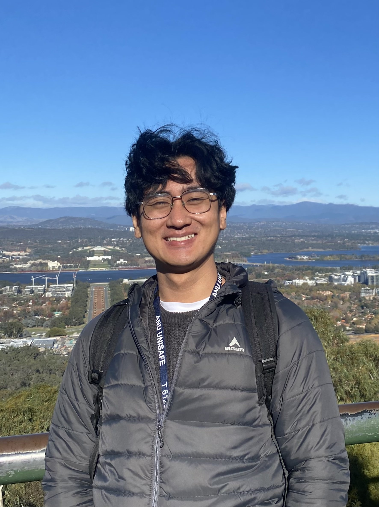
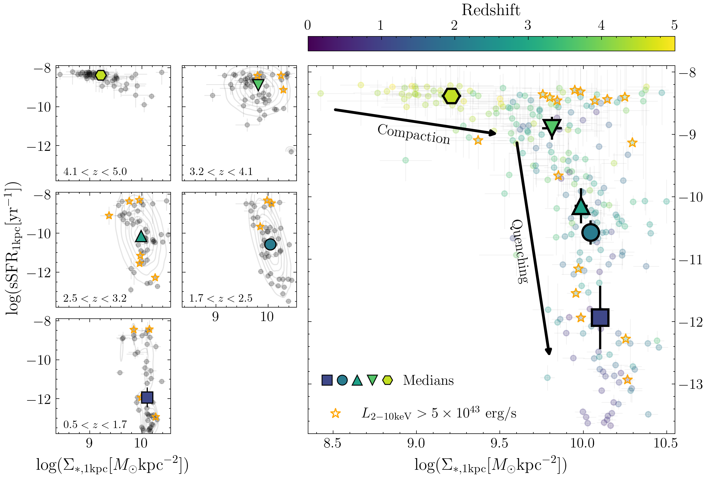

Astronomer · Tohoku University
Tracing the lives of massive galaxies.
I'm Novan Saputra Haryana, a PhD student in astronomy exploring how galaxies build their stellar cores, grow supermassive black holes, and eventually stop forming stars.

§ 01
About me
A little about me.
I'm an Indonesian astrophysicist currently pursuing my PhD at the Astronomical Institute of Tohoku University, Japan. I use observations from telescopes including JWST, Hubble, and Chandra to study how galaxies evolve over billions of years.
I use a range of multiwavelength observational techniques, including spatially resolved SED fitting, morphological modeling, X-ray stacking analysis, and modeling AGN emission in two-dimensional galaxy images. Beyond research, I enjoy running, music, and photography.
2026–now
PhD in Astronomy
Tohoku University · Sendai, Japan
2024–2026
MSc in Astronomy
Tohoku University · Sendai, Japan
2020–2024
BSc in Astronomy
Institut Teknologi Bandung · Bandung, Indonesia
§ 02
Research
How do massive galaxies grow—and stop growing?
I investigate how massive galaxies form dense stellar cores, shut down their star formation, and evolve alongside their central supermassive black holes. Using spatially resolved JWST imaging and complementary multiwavelength observations, I trace these processes across cosmic time.
Interactive research · Open in browser
Explore galaxy evolution.
Move through cosmic time, examine radial profiles, and explore individual galaxies and their physical properties.
Launch interactive explorer
Research tools: cosmic evolution · galaxy atlas · spatial profilesJWST + Chandra
§ 03
Publications
Selected publications.
First-author papers on the formation, quenching, and structural evolution of massive galaxies.
Stellar Mass Assembly History of Massive Quiescent Galaxies since z ~ 4: Insights from Spatially Resolved SED Fitting with JWST Data
Conference talks & presentations09 entries
- 12th Galaxy Evolution Workshop
Seoul National University, Seoul, South Korea Oral Presentation
- BeyondHubble
Kavli Institute for Cosmology, Cambridge, UK Oral Presentation
- The End of Star Formation
University of Illinois Urbana-Champaign, USA Oral Presentation
- 11th East-Asian Meeting on Astronomy
Niigata, Japan Oral Presentation
- 11th Galaxy Evolution Workshop
Nagoya University, Japan Oral Presentation
- IAU Symposium 396
Naples, Italy Oral Presentation
- 10th Galaxy Evolution Workshop
ASIAA, Taipei, Taiwan Oral Presentation
- RSAA Weekly Colloquium
Australian National University, Canberra Oral Presentation
- ELT Science in Light of JWST
Tohoku University, Sendai Poster Presentation
§ 04
Contact
Let's talk about galaxies.
I'm always happy to discuss astronomy, research ideas, and possible collaborations. Feel free to get in touch.
novan.haryana@astr.tohoku.ac.jp ↗Find me at
Astronomical Institute, Tohoku University
6-3 Aramaki, Aoba-ku, Sendai
Miyagi 980-8578, Japan
Elsewhere